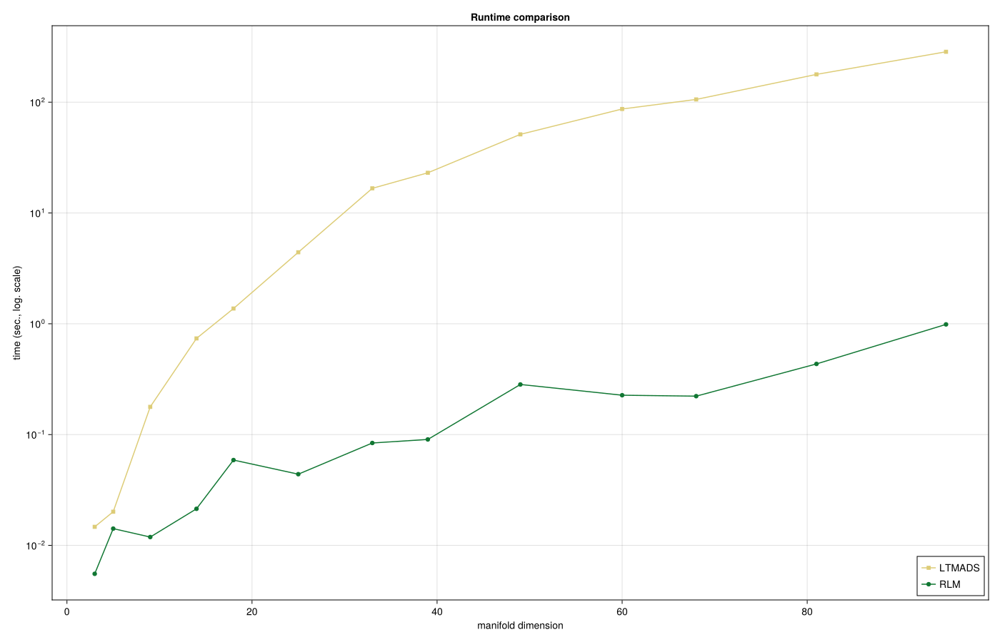
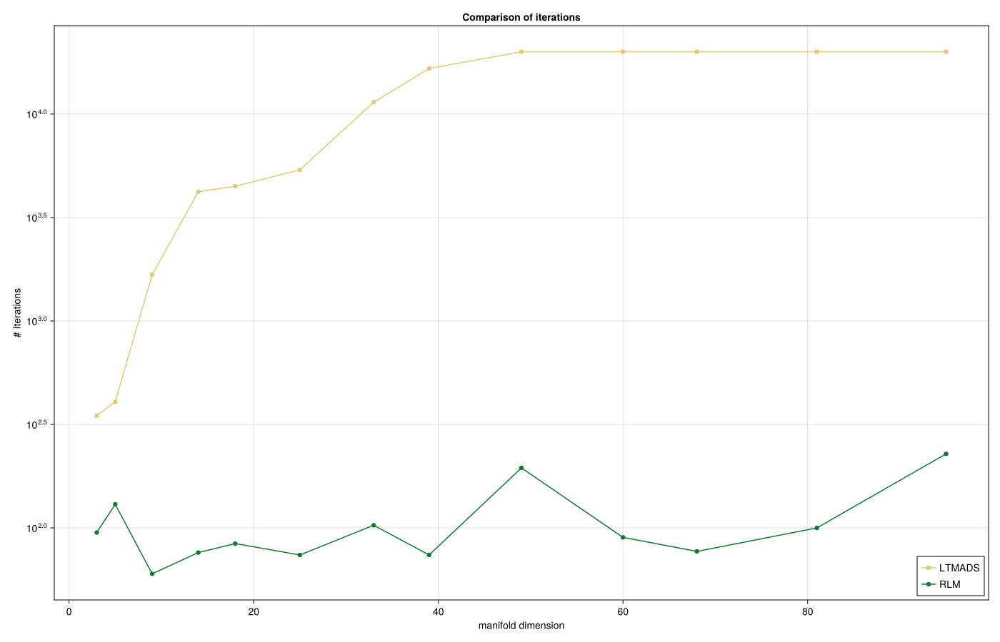

Robust Procrustes on the Stiefel manifold
Ronny Bergmann 2026-07-04
Prequel
This notebook reproduces the results and images of Section 6.2 in [BB26]. We use the following packages and parameters
using CairoMakie, Chairmarks, Colors, CSV, DataFrames, NamedColors, LinearAlgebra, Manopt, Manifolds, PrettyTables, Random
export_csv = true
ptc = NamedColors.load_paul_tol()
ltmads_color = ptc["mutedsand"]
robust_color = ptc["mutedgreen"]Let two data sets $A \in \mathbb{R}^{d\times n}$, $A = (a_1,\ldots,a_n)$, and $B \in \mathbb R^{k\times n}$, $B = (b_1,\ldots,b_n)$, $k \leq d$ of measured data be given, where we obtain a set of columns of values $a_i \in \mathbb R^d$, $b_j \in \mathbb R^d$ each.
The subspace Procrustes Problem aims to find the best orthonormal frame $p \in \mathrm{St}(k,d)$, where $\mathrm{St}(d,k) := \{ p \in \mathbb R^{d\times k}\,\mid\, p^{\mathrm{T}}p = I_k\}$, such that $A \approx pB$, and we here use a robust norm and obtain the robust Procrustes problem
\[\operatorname*{argmin}_{p \in \mathrm{SO}(d)}\ \lVert A - pB \rVert_{\mathrm{R}}, \qquad \lVert C \rVert_{\mathrm{R}} := \sum_{i=1}^{n} \lVert c_i \rVert_2,\]
where $c_i$, $i=1,\ldots,n$ again denote the columns of the matrix $C = (c_1,\ldots,c_n) \in \mathbb R^{d\times n}$.
Setup data
raw"""
generate_data(d)
Generate a data matrix ``A ∈ ℝ^{d× n}`` in a deterministic way,
here by using ``n = \frac{d(d-1)}{2}`` columns.
"""
function generate_data(d)
# (1) push the first unit vector scaled by 1/2
n = Int(d * (d + 1) / 2)
A = zeros(d, n)
A[1, 1] = 1.0
k = 2
dir = zeros(d)
for i in 2:d # for each following dimension, set point on the diagonal of the preceding dimensions
dir[1:i] .= 1 / sqrt(i)
dir[(i + 1):end] .= 0
v = range(0.0, 1.0, i + 2)[2:(end - 1)]
for vi in v
A[:, k] .= vi * dir
k = k + 1
end
end
return A
endAnd the cost, differential and adjoint differential
"""
f(M, p; i, A, B, robustifier = )
For given matrices ``A, B ∈ ℝ^{d,n}`` compute the robust Procrustes cost
```math
F_i(p) = (A - pB)_i = a_i - pb_i
```
"""
f(M, p; A, B) = sum(norm(A[:, i] - p * B[:, i]) for i in 1:size(A, 2))
"""
Fi(M, p; i, A, B)
Fi!(M, v, p; i, A, B)
For given matrices ``A, B ∈ ℝ^{d,n}`` compute the residual of the ith column
```math
F_i(p) = (A - pB)_i = a_i - pb_i
```
This can be computed in-place of `v`
"""
Fi(M, p; i, A, B) = A[:, i] - p * B[:, i]
Fi!(M, v, p; i, A, B) = (v .= A[:, i] .- p * B[:, i])
"""
DFi(M, p, X; i, A, B)
DFi!(M, y, p, X; i, A, B)
For given matrices ``A, B ∈ ℝ^{d,n}`` compute the differential of the residual of the ith column
with respect to the rotation ``p`` that is, ``X ∈ 𝔰𝔬(d)`` which reads
```math
\\mathcal J_{F_i}(p)[X] = DF_i(p)[X] = -pXb_i
```
This is computed in-place of `y`
"""
DFi(M, p, X; i, A, B) = - X * B[:, i]
DFi!(M, y, p, X; i, A, B) = (y .= - X * B[:, i])
raw"""
adjointDFi(M, p, y; i, A, B)
adjointDFi!(M, X, p, y; i, A, B)
For given matrices ``A, B ∈ ℝ^{d,n}`` compute the adjoint differential of the residual of the ith column
with respect to the rotation ``p`` that is, ``y ∈ ℝn`` but mapping into the tangent space at p
This is also referred to as the Jacobian
Since the Euclidean adoint of DF_i is here just ``-yb_i^{\mathrm{T}}``,
the only thing left is to project onto the tangent space, for which we can employ
`project(M, p, X)`for the Grassmann manifold here.
```math
D^*F_i(p)[y] = \\operatorname{proj}_{T_p\\mnathcal M}(-yb_i^{\mathrm{T}})
```
This is computed in-place of `X`.
"""
adjointDFi(M, p, y; i, A, B) = project(M, p, - y * B[:, i]')
adjointDFi!(M, X, p, y; i, A, B) = project!(M, X, p, - y * B[:, i]')Experiment setup
We test matrix dimensions $d=3,...,15$ and setup a collection of statistics
# Statistics:
matrix_sizes = collect(3:15)
reduced = [Int(d - ceil(d / 3)) for d in matrix_sizes]
num_experiments = length(matrix_sizes)
num_columns = zeros(Int, num_experiments)
manifold_dimensions = zeros(Int, num_experiments)
mean_time_rLM = zeros(Float64, num_experiments)
mean_time_LTMADS = zeros(Float64, num_experiments)
final_cost_rLM = zeros(Float64, num_experiments)
final_cost_LTMADS = zeros(Float64, num_experiments)
iterations_rLM = zeros(Int, num_experiments)
iterations_LTMADS = zeros(Int, num_experiments)Run experiments
for (i, (d, k)) in enumerate(zip(matrix_sizes, reduced))
A = generate_data(d)
n = size(A, 2) # number of summands in the vectorial cost sum
Mr = Rotations(d)
Random.seed!(42)
e = Matrix{Float64}(I, d, d)
p_star = exp(Mr, e, rand(Mr; vector_at=e, σ = 0.5/d))
B = copy(A)
# and generate a few outliers in [3,6] so it also works already for d=3
B[2, 4] += 0.1; B[3, 1] += 0.1; B[3, 2] += 0.1; B[1, 6] += 0.1
mask = B .== A
# then rotate
B = p_star' * B
B = B[1:k, :]
p_star = p_star[:, 1:k]
# Seting cost and vectorial block function
F(M, p) = [Fi(M, p; i = i, A = A, B = B) for i in 1:n]
vgfs = [
VectorDifferentialFunction(
(M, c, p) -> Fi!(M, c, p; i = i, A = A, B = B),
(M, y, p, X) -> DFi!(M, y, p, X; i = i, A = A, B = B),
(M, X, p, y) -> adjointDFi!(M, X, p, y; i = i, A = A, B = B),
d;
function_type = FunctionVectorialType(), jacobian_type = FunctionVectorialType(),
adjoint_jacobian_type = FunctionVectorialType(), evaluation = InplaceEvaluation(),
) for i in 1:n
]
rs = [ 1.0e-5 ∘ HuberRobustifier() for _ in 1:n ]
M = Stiefel(d, k)
# Start with the identity
p0 = Matrix{Float64}(I, d, d)
# cut to Grassmann
p0 = p0[:, 1:k]
#
# Solver runs. Both (a) an individual run to obtain stats like maxiter
#
# Least Squares Hubertized
state1 = LevenbergMarquardt(
M, vgfs, p0;
robustifier = rs,
scaling_mode = :Strict,
scaling_threshold = 1.0e-4,
damping_increase_factor = 4.0,
candidate_acceptance_threshold = 0.2,
damping_term_min = 1.0e-7,
return_state = true,
)
iter1 = get_count(state1, :Iterations)
p1 = get_solver_result(state1)
time1 = @be LevenbergMarquardt(
$M, $vgfs, $p0; robustifier = $rs, scaling_mode = :Strict, scaling_threshold = 1.0e-4,
damping_increase_factor = 4.0, candidate_acceptance_threshold = 0.2, damping_term_min = 1.0e-7,
) samples = 5 evals = 3
state2 = mesh_adaptive_direct_search(
M, (M, p) -> f(M, p; A = A, B = B), p0;
stopping_criterion = StoppingCriterion = StopAfterIteration(20000) | StopWhenPollSizeLess(1.0e-10),
return_state = true
)
time2 = @be mesh_adaptive_direct_search(
$M, $((M, p) -> f(M, p; A = A, B = B)), $p0;
stopping_criterion = $(StoppingCriterion = StopAfterIteration(20000) | StopWhenPollSizeLess(1.0e-10))
) samples = 5 evals = 3
iter2 = get_count(get_state(state2), :Iterations)
p2 = get_solver_result(state2)
# Collect stats
num_columns[i] = n
manifold_dimensions[i] = manifold_dimension(M)
mean_time_rLM[i] = mean(time1).time
mean_time_LTMADS[i] = mean(time2).time
final_cost_rLM[i] = f(M, p1; A = A, B = B)
final_cost_LTMADS[i] = f(M, p2; A = A, B = B)
iterations_rLM[i] = iter1
iterations_LTMADS[i] = iter2
end
as well as the resulting iteration numbers

Literature
- [BB26]
- M. Baran and R. Bergmann. A modified Riemannian Levenberg-Marquardt algorithm for robust and constraint optimization on manifolds (2026), arXiv:2606.23560 [math.OC].
Technical Details
This tutorial is cached. It was last run on the following package versions.
Status `~/Repositories/Julia/ManoptExamples.jl/examples/Project.toml`
[6e4b80f9] BenchmarkTools v1.8.0
[336ed68f] CSV v0.10.16
[13f3f980] CairoMakie v0.15.12
[0ca39b1e] Chairmarks v1.3.1
[35d6a980] ColorSchemes v3.31.0
[5ae59095] Colors v0.13.1
[a93c6f00] DataFrames v1.8.2
[31c24e10] Distributions v0.25.129
[e9467ef8] GLMakie v0.13.12
[5c1252a2] GeometryBasics v0.5.11
[4d00f742] GeometryTypes v0.8.5
[7073ff75] IJulia v1.34.4
[682c06a0] JSON v1.6.1
[8ac3fa9e] LRUCache v1.6.2
[b964fa9f] LaTeXStrings v1.4.0
[d3d80556] LineSearches v7.7.1
[ee78f7c6] Makie v0.24.12
[7351309b] ManifoldAsymptote v0.1.0
[af67fdf4] ManifoldDiff v0.4.5
[9d80ff41] ManifoldMakie v0.1.2
[1cead3c2] Manifolds v0.11.28
[3362f125] ManifoldsBase v2.4.0
⌃ [0fc0a36d] Manopt v0.6.0
[5b8d5e80] ManoptExamples v0.1.18 `..`
[51fcb6bd] NamedColors v0.2.3
[6fe1bfb0] OffsetArrays v1.17.0
[91a5bcdd] Plots v1.41.6
⌃ [08abe8d2] PrettyTables v3.3.2
[6099a3de] PythonCall v0.9.35
[f468eda6] QuadraticModels v0.9.16
[731186ca] RecursiveArrayTools v4.3.2
[1e40b3f8] RipQP v0.7.0
Info Packages marked with ⌃ have new versions available and may be upgradable.This tutorial was last rendered July 5, 2026, 21:23:24.